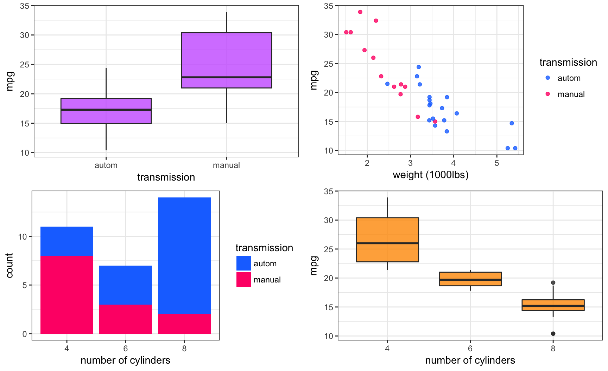
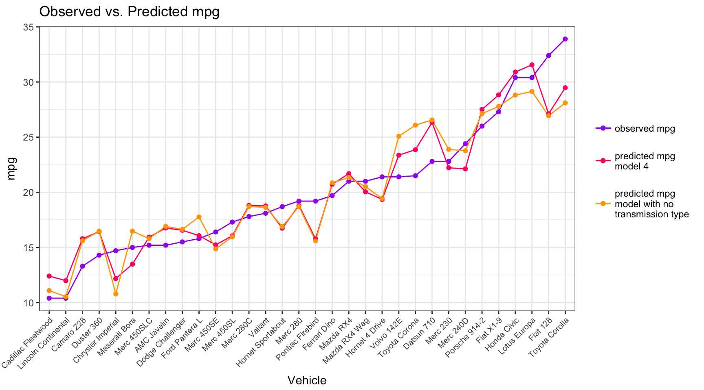

This report analyses the R dataset mtcars to explore the relationship between car fuel efficiency, specified as miles per gallon (mpg), and the type of transmission, i.e. automatic or manual. The data was originally extracted from the 1974 Motor Trend US magazine, and comprises fuel consumption and 10 aspects of automobile design and performance for 32 1973–74 models.
This analysis finds a significant relationship between mpg and the type of transmission. Specifically, manual transmission cars are associated with higher mpg (i.e. better efficiency). However, there are confounding factors that affect this relationship. For example, automatic cars are associated with higher weight and larger engines, which also affect efficiency. The relationship between efficiency and type of transmission is robust to different specifications.
The variables in the dataset are listed as follow,
[, 1] mpg Miles/(US) gallon
[, 2] cyl Number of cylinders
[, 3] disp Displacement (cu.in.)
[, 4] hp Gross horsepower
[, 5] drat Rear axle ratio
[, 6] wt Weight (1000 lbs)
[, 7] qsec 1/4 mile time
[, 8] vs V/S
[, 9] am Transmission (0 = automatic, 1 = manual)
[,10] gear Number of forward gears
[,11] carb Number of carburetors library(datasets);library(ggplot2);library(plyr);library(dplyr)
library(gridExtra);library(car);library(memisc)data <- mtcars
factors <- c(2,8,9,10)
data[,factors] <- data.frame(apply(data[factors], 2, as.factor))
data$am <- revalue(data$am, c("1" = "manual", "0" = "autom"))
data <- cbind(cars = row.names(data), data)
data <- arrange(data, mpg)f1 <- ggplot(data, aes(am, mpg)) + theme_bw() +
geom_boxplot(fill = "#cc66ff", alpha = 0.8) + xlab("transmission")
f2 <- ggplot(data, aes(wt, mpg, colour = am)) + theme_bw() +
geom_point(alpha = 0.8) + xlab("weight (1000lbs)") + ylab("mpg") +
scale_colour_manual("transmission", values = c("#1a75ff", "#ff1a75"))
f3 <- ggplot(data, aes(cyl, fill = am)) + theme_bw() +
geom_bar() + xlab("number of cylinders") + ylab("count") +
scale_fill_manual("transmission", values = c("#1a75ff", "#ff1a75"))
f4 <- ggplot(data, aes(cyl, mpg)) + theme_bw() + ylab("mpg") +
geom_boxplot(fill = "#ff9900", alpha = 0.8) + xlab("number of cylinders")
grid.arrange(f1, f2, f3, f4, ncol = 2)
From the top-left clockwise. The first plot shows that manual transmission cars are associated with better fuel efficiency. The second plot shows a negative relationship between fuel efficiency and weight, but also shows that heavier vehicles tend to be automatic. The third plot shows that cars with bigger engines tend to be automatic. The fourth plot shows a negative relationship between engine size and fuel efficiency.
The variables to be included in the model were chosen according to their plausibility of directly affecting fuel efficiency. For example, it would be expected that engine size (cyl) and vehicle weight (wt) directly affect fuel consumption, while other variables, such as horse power (hp) and/or quarter-mile time (qsec) –although correlated with mpg– do not directly affect it. It could be argued that the latter are themselves due to engine size and/or vehicle weight and do not independently affect mpg.
model1 <- lm(mpg~am, data)
model2 <- lm(mpg~am+cyl, data)
model3 <- lm(mpg~am+cyl+wt, data)
model4 <- lm(mpg~am+cyl+wt+am*wt, data)##
## Calls:
## model1: lm(formula = mpg ~ am, data = data)
## model2: lm(formula = mpg ~ am + cyl, data = data)
## model3: lm(formula = mpg ~ am + cyl + wt, data = data)
## model4: lm(formula = mpg ~ am + cyl + wt + am * wt, data = data)
##
## ========================================================================
## model1 model2 model3 model4
## ------------------------------------------------------------------------
## Intercept (autom, 4cyl) 17.147*** 24.802*** 33.754*** 29.775***
## (1.125) (1.323) (2.813) (2.840)
## manual 7.245*** 2.560 0.150 11.569**
## (1.764) (1.298) (1.300) (4.088)
## cyl 6 -6.156*** -4.257** -2.710
## (1.536) (1.411) (1.357)
## cyl 8 -10.068*** -6.079** -4.776**
## (1.452) (1.684) (1.556)
## wt -3.150** -2.399**
## (0.908) (0.844)
## manual*wt -4.068**
## (1.397)
## ------------------------------------------------------------------------
## R-squared 0.4 0.8 0.8 0.9
## adj. R-squared 0.3 0.7 0.8 0.9
## sigma 4.9 3.1 2.6 2.3
## F 16.9 30.4 34.8 37.2
## p 0.0 0.0 0.0 0.0
## Log-likelihood -95.2 -79.2 -73.3 -68.8
## Deviance 720.9 264.5 183.0 138.0
## AIC 196.5 168.4 158.6 151.6
## BIC 200.9 175.7 167.4 161.8
## N 32 32 32 32
## ========================================================================The results of model 1 show that there is a significant relationship between fuel efficiency and type of transmission. With at least 99% confidence, cars with manual transmission are, on average, 7.245 mpg more efficient than their automatic counterparts. However, this relationship can be –completely or partially– due to other factors, as investigated below.
When engine size (cyl) is included in model 2, the variation due to transmission type becomes smaller and statistically insignificant, instead the bulk of the variation in mpg is now attributed to engine size, larger engine means less mpg efficiency. Similarly, in model 3 the introduction of weight as a regressor renders the transmission effect even smaller and also statistically insignificant. We could have expected these results from the graphical analysis above, where transmission type is highly correlated with engine size and vehicle weight.
Model 4 includes an interaction variable to separate the effect between weight and transmission type. In this model, transmission type seems to have a large and statistically significant effect. When accounting for engine size and the interaction between weight and type of transmission, manual transmission cars are associated with an 11.569 mpg efficiency increase compared to their automatic counterparts.
The inclusion of the interaction variable improves the predictive ability of the model as seen by the higher R-squared and the lower deviance value. Including more variables to model 4 (omitted here), specifically an interaction between engine size and transmission type, do not significantly improve the predictive ability of the model and it comes with a cost on degrees of freedom. Also, the inclusions (or lack thereof) do not change the main qualitative result regarding the studied (am) variable.
anova(model1, model2, model3, model4)## Analysis of Variance Table
##
## Model 1: mpg ~ am
## Model 2: mpg ~ am + cyl
## Model 3: mpg ~ am + cyl + wt
## Model 4: mpg ~ am + cyl + wt + am * wt
## Res.Df RSS Df Sum of Sq F Pr(>F)
## 1 30 720.90
## 2 28 264.50 2 456.40 42.9969 5.69e-09 ***
## 3 27 182.97 1 81.53 15.3611 0.0005768 ***
## 4 26 137.99 1 44.98 8.4744 0.0072955 **
## ---
## Signif. codes: 0 '***' 0.001 '**' 0.01 '*' 0.05 '.' 0.1 ' ' 1Similar to the previous results, the anova comparison further supports that model 4 improves on the other 3 specifications. RSS (deviance as seen in the previous table) is lowest for model 4, and the values of F and Pr(>F) support the inclusion of the interaction variable.
amNo <- lm(mpg~wt+cyl, data)
anova(amNo, model4)## Analysis of Variance Table
##
## Model 1: mpg ~ wt + cyl
## Model 2: mpg ~ am + cyl + wt + am * wt
## Res.Df RSS Df Sum of Sq F Pr(>F)
## 1 28 183.06
## 2 26 137.99 2 45.067 4.2457 0.02538 *
## ---
## Signif. codes: 0 '***' 0.001 '**' 0.01 '*' 0.05 '.' 0.1 ' ' 1
Including transmission type, improves (although modestly) the predictive ability of the model compared to a model without it. I suspect the effect is only modest because of the effects of the other 2 factors. When transmission type is excluded, the other two factors “absorb” most of its effect because of the strong correlations seen in the first graphical analysis.
More important however, is that although both models fare similarly in terms of predictive ability, model 4 allows us to explore the relationship between transmission type and mpg which is the topic of this analysis. Excluding transmission type, confounds its effects on mpg by the other two variables. Model 4 on the other hand, separates –at least partially– the effect of transmission type from the other variables.
par(mfrow = c(1, 2))
plot(model4, which=1)
plot(model4, which=2)A mean of the residuals \(4.8572257\times 10^{-17}\) close to zero; a Shapiro-Wilk normality test with p.value \(0.1026976\), which fails to reject the null hypothesis that the residuals come from a Normal distribution; and the Normal Q-Q graphical analysis, validate a sufficient normality of the residuals from model 4.
dfb <- dfbetas(model4)
hv <- hatvalues(model4)
rs <- rstandard(model4)
vif4 <- vif(model4)Analyses of influence (results omitted) do not report any major problems with outliers, specifically with observations 24, 31, and 32 as shown in the previous plot.
This analysis finds a significant relationship between car fuel efficiency and type of transmission. Manual transmission cars are associated with higher mpg. However, there are other factors that confound this relationship. For example, automatic cars are associated with higher weight and larger engines, which in turn also reduce efficiency. In the best model proposed, which accounts for engine size and and the interaction between weight and type of transmission, manual transmission cars are associated with an 11.569 mpg efficiency increase as compared to their automatic transmission counterparts. The model is able to predict the observed efficiency with fair accuracy and is robust to different plausible specifications.